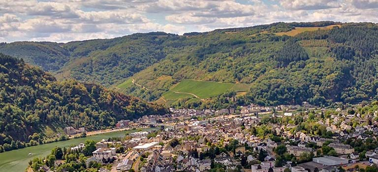
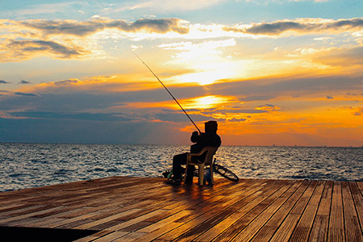

Fish Haven, Idaho

Five Day Forecast

Fishing Season is Almost Here!
All right, all right, I know May is still a few months away, but I'm just trying to bring some hope to these bleak days without our favorite pastime.
My twins, Kit and Heloise, love fishing with their father when he's not far away from home. On the island where we used to live, they would catch fish with their bare hands! Nowadays they use more refined techniques.
It's no surprise, then, that the twins and my husband are as antsy as anyone for fishing season. Here are some great boredom busting ideas to pass the time until then ... continue to read full article